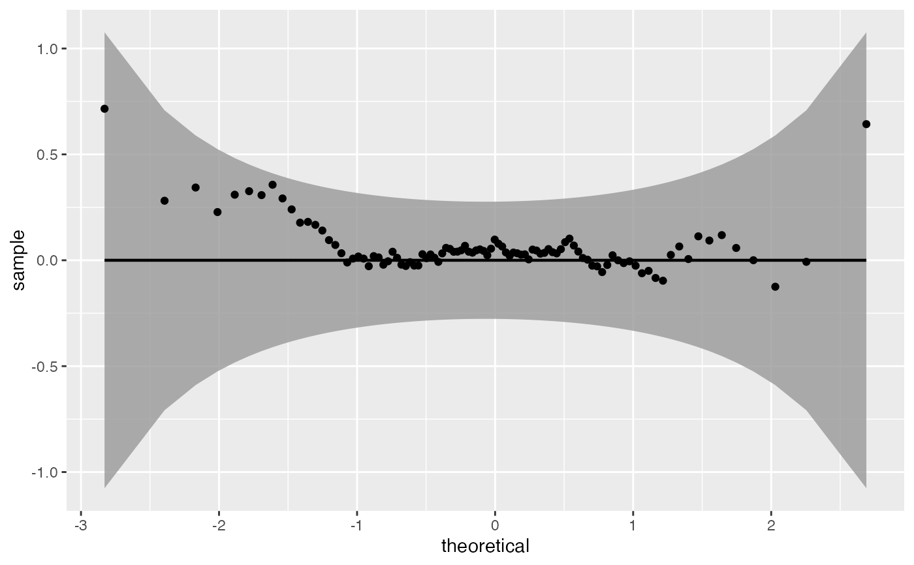
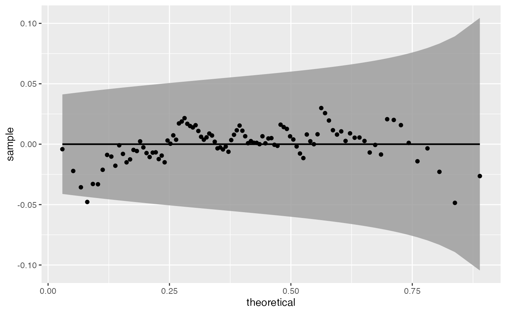
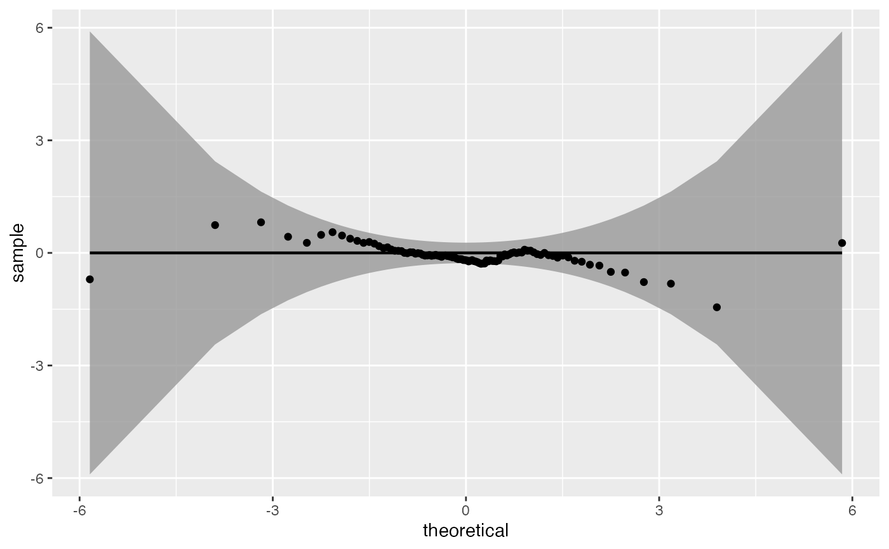

This function is a wrapper around qqplotr::stat_pp_*(detrend = TRUE).
Examples
x <- rnorm(100)
qq_worm_plot(x)

x <- rbeta(100, shape1 = 2, shape2 = 3)
qq_worm_plot(x, distribution = "beta", shape1 = 2, shape2 = 3)

x <- rt(100, df = 3)
qq_worm_plot(x, distribution = "t", df = 3)

# x <- rexp(100)
# qq_worm_plot(x, distribution = "exp")
# x <- rpois(100, lambda = 15)
# qq_worm_plot(x, distribution = "pois", lambda = 15)
# x <- runif(100)
# qq_worm_plot(x, distribution = "unif")